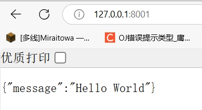

Vue3 + Fastapi 前后端框架搭建
写在开头
时隔一年，重走前后端开发路，正好比较有时间，打算好好将开发过程中有价值的点记录一下，对自己也是一种记忆，也方便后来使用相同框架的人快速上手。
Vue3 前端
介绍

截止 2025 年 1 月 22 日，Vuetify 3 框架在 github 上有着 40.2 k 的 Star，我在前几年完全没听过这个，可见其这几年发展之快。
笔者了解了一下发现其组件较为全面，社区也比较完善。并且完全开源
搭建
从原生的 vite 搭建 vue3 前端我认为是吃力不讨好的，所以直接基于 Vuetify 3 框架的模板来作为前端的 base。
初始化模板非常简单，只需要 npm create vuetify@latest 即可，期间会有一些选项要求配置，例如：1
2
3
4
5
6
7
8
9
10
11success Installed "create-vuetify@x.x.x" with binaries:
- create-vuetify
? Project name (项目名): ❯ vuetify-project //生成应用程序的文件夹
? Use TypeScript (使用 TypeScript)?: ❯ No / Yes
? Would you like to install dependencies with yarn, npm, or pnpm?:
❯ yarn
npm
pnpm
bun
none
选择的时候，使用小键盘上下左右来进行选择，需要注意的是界面不是实时更新，按下方向键后需要按下回车来更新选项，然后再次回车进行确认。
运行
进入目录后 npm run dev 就可以了。
命令行正常运行如图：
访问 localhost:3000 如图：
FastAPI 后端
介绍

FastAPI 是一个用于构建 API 的现代、快速（高性能）的 web 框架，专为在 Python 中构建 RESTful API 而设计。
RESTful是一种网络应用程序的设计风格和开发方式，其特点为每一个URI代表一种资源，客户端通过GET、POST、PUT、DELETE等动作，对服务器端资源进行操作。
FastAPI 使用 Python 3.8+ 并基于标准的 Python 类型提示。
FastAPI 建立在 Starlette 和 Pydantic 之上，利用类型提示进行数据处理，并自动生成API文档。
FastAPI 于 2018 年 12 月 5 日发布第一版本，以其易用性、速度和稳健性在开发者中间迅速流行起来。
FastAPI 支持异步编程，可在生产环境中运行。
它也是在近几年火起来的，据说非常方便敏捷开发，所以拿来用用看。
搭建
自动搭建
直接使用 Pycharm 自带的模板创建即可，其会创建一个文件 main.py 并且有一个测试用的 API，直接点击运行则会在 localhost:8000 打开后端，访问对应路径即可测试 API。
从头搭建
自行创建一个虚拟python环境或者conda环境，然后通过 pip 安装 fastapi 和 uvicorn.1
2pip install fastapi
pip install uvicorn
之后手动创建 main.py，参考 FastAPI 文档写入下述代码：
1 | from fastapi import FastAPI # 导入 FastAPI 包 |
之后使用 uvicorn main:app --reload 即可运行 FastApi 后端，解释如下
1 | uvicorn 一种 ASGI 服务 |

自定义
如果需要自定义端口和 host，只需在 main.py 中写 main 函数，运行 main 即可，也省去了命令行手动执行 uvicorn。
1 | if __name__ == '__main__': |
文档查看
FastAPI 会自动生成 API 交互文档，路径在1
2
3SwaggerUI：http://host:port/docs
ReDoc：http://host:port/redoc
例如：http://127.0.0.1:8000/docs
API多起来后看起来还是很方便的。
最后
只能说现在想要搭一个前后端框架比原来简单很多了，且搭建后内容也非常简约了，就像 FASTAPI 那样，几行就已经创建好一个后端了。
上述工作参考代码 -> 代码